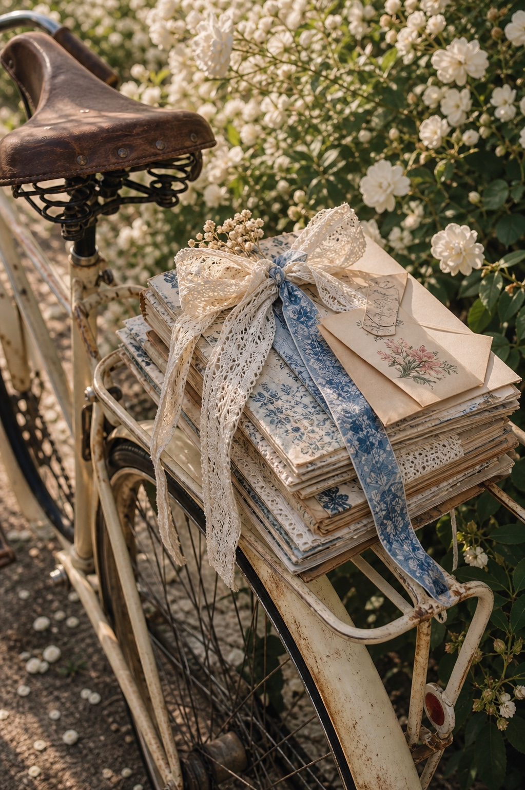
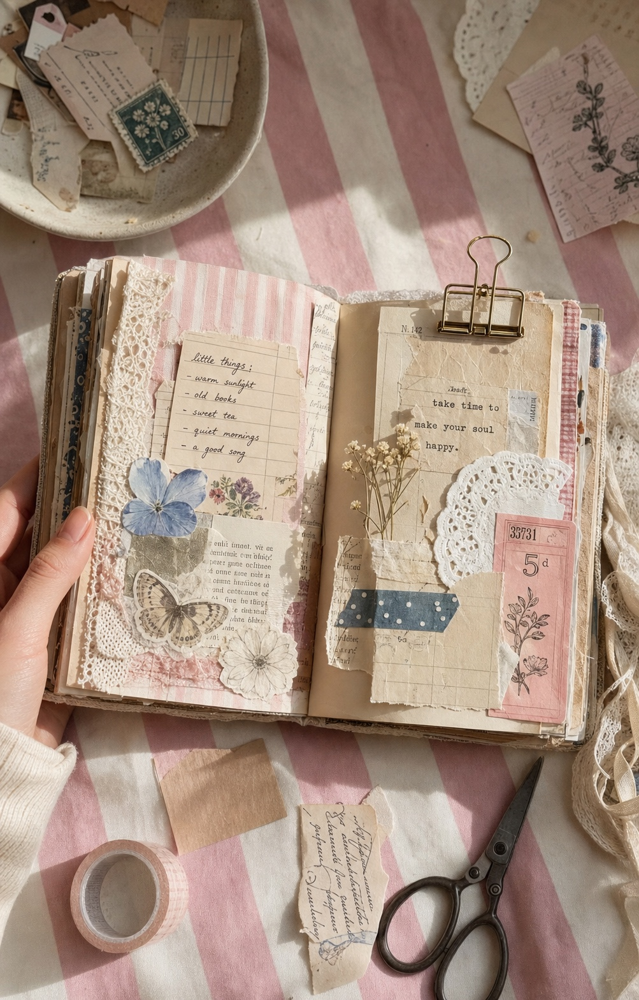
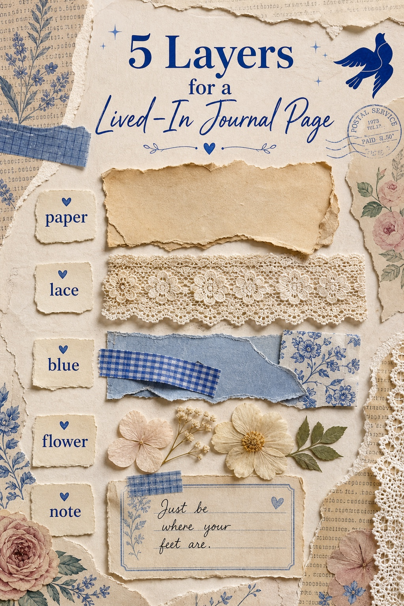

The best journal pages do not look perfect. They look handled. A little uneven, a little full, a little like someone kept adding pieces because the page still had something to say.

Start With One Object Story
Before you build the page, choose the feeling: a bicycle ride, a garden afternoon, a letter you almost forgot, a desk by the window. One object story gives the page a reason to exist.

Let the Page Look Touched
Flat pages feel decorative. Lived-in pages have pressure: lace tucked under paper, a receipt edge showing, a flower pressed slightly off-center, scissors nearby, a scrap that looks like it was saved from another day.

Use Five Simple Layers
Try this order when a spread feels too empty: paper first, lace second, one blue piece, one flower, and one small note. It is enough structure to start, but still loose enough to feel personal.
Build the Atmosphere Around It
The table matters too. Tea, ribbon, flowers, scraps, tape, light from a window: these pieces make the page feel like part of a life instead of a finished school project.
The goal is not to fill every inch. The goal is to make every piece feel like it had a reason to be kept.